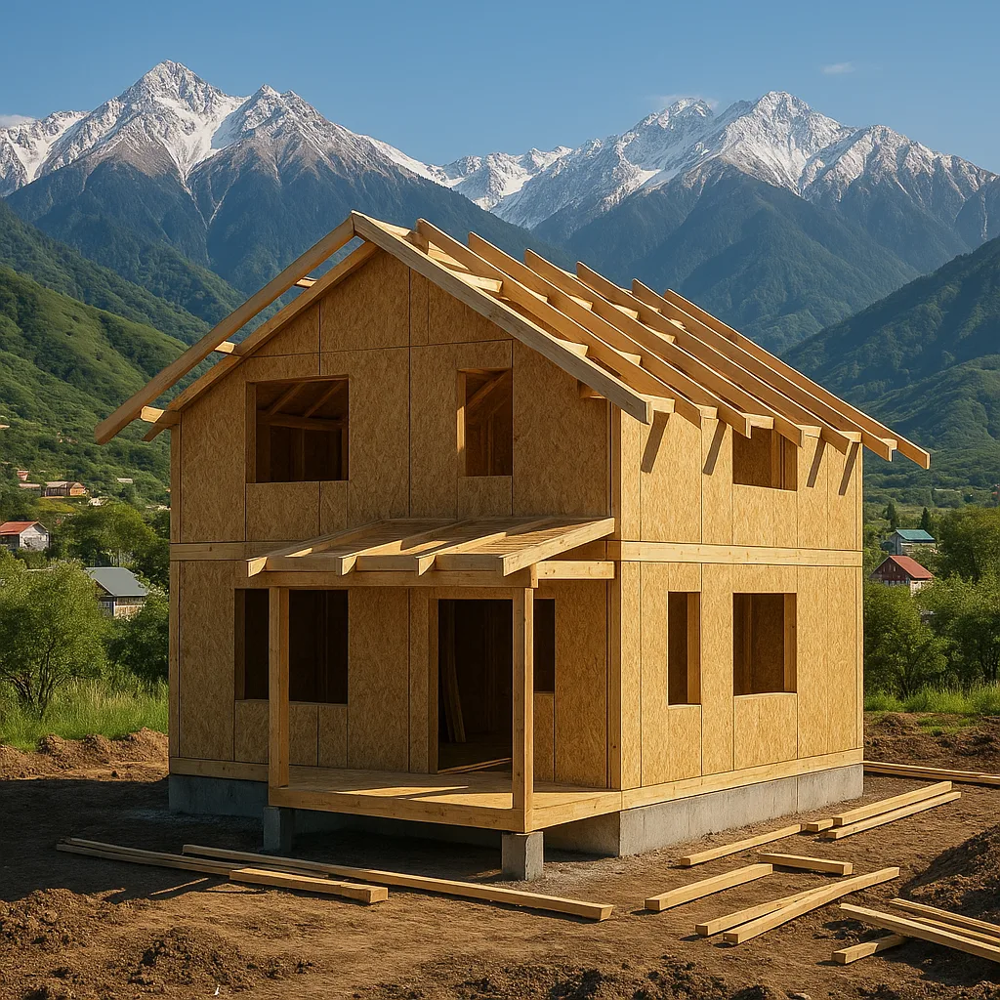
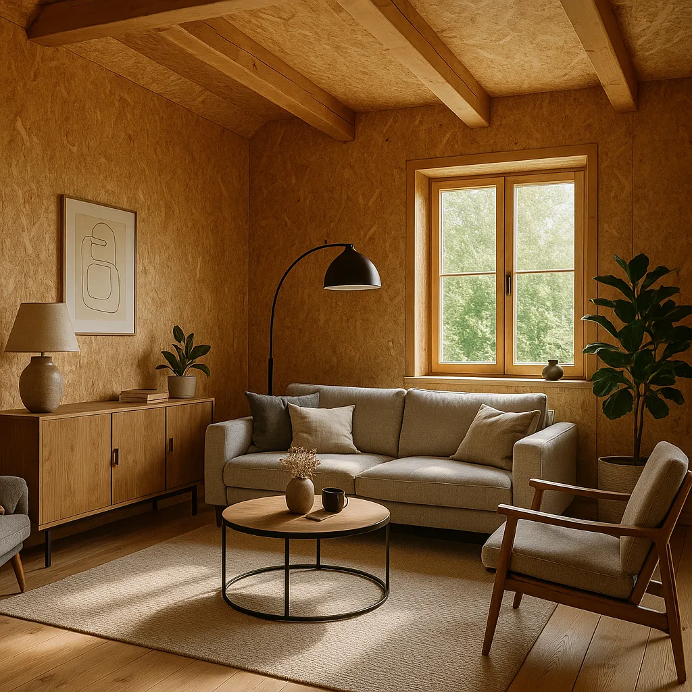

Сколько стоит дом из СИП-панелей в Алматы в 2026 году

С каждым годом строительство домов в Казахстане становится все более популярным, особенно быстро растет интерес к домам из СИП-панелей. Этот строительный материал давно зарекомендовал себя как один из самых надежных и экономически выгодных. В Алматы, крупнейшем городе Казахстана, спрос на такие дома стабильно растет. Но сколько же будет стоить построить дом из СИП-панелей в 2026 году? Давайте разберемся.
Что такое СИП-панели?
СИП-панели (Сэндвич-панели) представляют собой многослойные строительные материалы, состоящие из двух жестких плит и слоя утеплителя между ними. Основные преимущества СИП-панелей:
- Высокая теплоизоляция и энергоэффективность.
- Экологичность и безопасность материалов.
- Быстрота строительства благодаря модульной системе.
- Долговечность и устойчивость к внешней среде.
СИП-панели были впервые разработаны в середине 20 века и с тех пор завоевали признание во всем мире благодаря своей универсальности и надежности. В Казахстане, где климатические условия варьируются от суровых зим до жаркого лета, теплоизоляционные свойства СИП-панелей становятся особенно ценными. Например, благодаря своей конструкции, они могут удерживать тепло в 2-3 раза лучше, чем традиционные строительные материалы, что существенно снижает затраты на отопление зимой и охлаждение летом.
Факторы, влияющие на стоимость строительства
Стоимость дома из СИП-панелей зависит от множества факторов. Рассмотрим основные из них:
- Проект дома: индивидуальный или типовой проект. Индивидуальный проект может быть дороже на 10-15% из-за необходимости уникальной разработки и адаптации под конкретные условия.
- Площадь и этажность: чем больше дом, тем выше стоимость. Например, строительство двухэтажного дома из СИП-панелей площадью 150 кв.м. может обойтись в 20% дороже, чем одноэтажного такого же размера.
- Материалы отделки: внешний и внутренний декор, окна и двери. Отделка высокого качества может увеличить общую стоимость строительства на 30%.
- Подключение коммуникаций: водоснабжение, электроэнергия, канализация. В среднем, подключение коммуникаций может составлять до 15% от общей стоимости строительства.
- Локация и транспортировка материалов: удаленные участки могут повлечь за собой дополнительные расходы на транспортировку.
Все эти факторы могут значительно влиять на окончательную цену строительства. Например, строительство дома в центральных районах Алматы может быть дороже на 10-20% из-за более высоких цен на землю и работы, по сравнению с периферийными районами.
Прогноз стоимости в 2026 году
Согласно экспертным оценкам и текущим рыночным тенденциям, средняя стоимость квадратного метра дома из СИП-панелей в Алматы в 2026 году может составлять от 100 000 до 150 000 тенге. Однако, важно помнить, что цены могут варьироваться в зависимости от конкретных условий и выбранных материалов.
Для примера, если вы планируете построить дом площадью 100 кв.м., то общая стоимость строительства может составить от 10 до 15 миллионов тенге. Эта стоимость включает материалы, работу и основные коммуникации.

Преимущества строительства с HotWell.kz
Компания HotWell.kz предлагает своим клиентам:
- Широкий выбор проектов домов из СИП-панелей.
- Индивидуальный подход к каждому клиенту. Наша команда готова адаптировать проекты под ваши нужды и предпочтения.
- Высокое качество материалов и технологий строительства. Все материалы проверяются на соответствие международным стандартам.
- Оперативное выполнение работ в согласованные сроки. Средний срок возведения дома из СИП-панелей — от 3 до 6 месяцев, в зависимости от сложности проекта.
- Гарантии на все виды работ и материалов. Мы предоставляем гарантию на конструкцию дома до 10 лет.
Вы можете ознакомиться с нашими проектами домов и реализованными объектами. Мы гордимся тем, что наши дома не только функциональны, но и эстетически привлекательны.
Часто задаваемые вопросы
Какая минимальная площадь дома из СИП-панелей возможна?
Минимальная площадь дома может начинаться от 30-40 квадратных метров, в зависимости от проекта и требований заказчика. Такая площадь подойдет для дачных домиков или небольших семейных домов.
Можно ли строить дом из СИП-панелей в зимний период?
Да, строительство возможно круглый год, так как СИП-панели не требуют сложных строительных процессов при низких температурах. Это преимущество позволяет сократить время ожидания и быстро приступить к строительству, даже если вы решили начать проект в зимние месяцы.
Как долго строится дом из СИП-панелей?
Среднее время строительства дома из СИП-панелей составляет от 3 до 6 месяцев в зависимости от сложности проекта. Например, одноэтажный дом площадью 100 кв.м. может быть построен за 3 месяца, включая время на отделочные работы и подключение коммуникаций.
Насколько долговечны дома из СИП-панелей?
Дома из СИП-панелей могут служить более 50 лет при правильном уходе и эксплуатации. Благодаря своей устойчивости к плесени, гниению и насекомым, такие дома требуют минимального ухода, что делает их особенно привлекательными для долгосрочного проживания.
Дорого ли подключение коммуникаций?
Стоимость подключения коммуникаций зависит от удаленности участка и потребностей заказчика, но современные технологии позволяют сделать это достаточно экономично. Например, подключение стандартного набора коммуникаций к дому в пределах городской черты может обойтись в 1-2 миллиона тенге.

Заключение
Строительство дома из СИП-панелей — это современное и рациональное решение для тех, кто ценит качество и экономичность. В 2026 году стоимость таких домов в Алматы останется доступной для многих семей. Если вы планируете построить дом своей мечты, обратитесь в HotWell.kz. Наши специалисты помогут вам на каждом этапе строительства и предложат оптимальные решения. Свяжитесь с нами для консультации через контактную форму.
В заключение, выбор в пользу строительства с использованием СИП-панелей — это инвестиция в будущее вашей семьи. Наша команда в HotWell.kz готова предложить вам полную поддержку, начиная от разработки проекта и заканчивая сдачей объекта в эксплуатацию. Мы уверены, что дом, построенный с нами, будет не только комфортным, но и надежным укрытием для вашей семьи на долгие годы. Если у вас остались вопросы, наши консультанты всегда готовы предоставить дополнительную информацию и помочь в выборе оптимального решения.
Хотите такой же дом из СИП-панелей?
Бесплатно рассчитаем смету и подберём проект под ваш участок и бюджет.